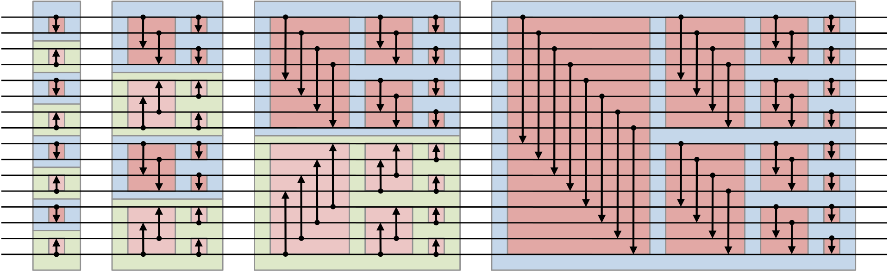

# Differentiable parallel approximate sorting networks

[All the code for this post is available on GitHub](https://github.com/johnhw/differentiable_sorting)
Differentiating through all kinds of functions makes them amenable to inclusion (and optimisation) inside of deep networks, or generally inside differentiable programming environments. Some operations, like matrix multiplication or trigonometric functions are trivially differentiably, and their composition is differentiable by the chain rule. Other operations, like iteration or storing/retrieving values from memory are less obvious and clever constructions and approximations have been proposed to build these into differentiable programming systems.
One operation that is not so clearly differentiable is sorting. There have been approaches to this in the literature based on optimal transport [#Cuturi2019], and in relaxations of sorting networks like **NeuroSort** [#Grover2019]. This post explores differentiable sorting networks using the **NeuroSort** approach and includes a simple Python implementation works with PyTorch, TensorFlow, JAX, NumPY and others.
## Bitonic sorting
[Bitonic sorts](https://en.wikipedia.org/wiki/Bitonic_sorter) create sorting networks with a sequence of fixed conditional swapping operations executed on an `n` element vector in parallel where, `n=2^k`.

*[Image: from Wikipedia, by user Bitonic, CC0](https://en.wikipedia.org/wiki/Bitonic_sorter#/media/File:BitonicSort1.svg)*
The sorting network for `n=2^k` elements has `k(k-1)/2` "layers" where parallel compare-and-swap operations are used to rearrange a `n` element vector into sorted order. The sequence of operations is independent of the data.
### Differentiable compare-and-swap
If we define the `softmax(a,b)` function (not the traditional "softmax" used for classification, but rather log-sum-exp!) as the [continuous approximation to the `max(a,b)` function](https://en.wikipedia.org/wiki/Smooth_maximum),
`softmax(a,b) = log(exp(a) + exp(b))`.
then
`softmin(a,b) = a + b - softmax(a,b)`.
[Alternatively `softmin(a,b) = -log(exp(-a) + exp(-b))` but this adds numerical instability]
Notice that we now have a differentiable compare-and-swap operation:
`softcswap(a,b) = (softmin(a,b), softmax(a,b))`
We can alternatively use:
```python
smoothmax(a,b, alpha) = (a * exp(a * alpha) + b * exp(b * alpha)) /
(exp(a * alpha) + exp(b * alpha))
```
which has a configurable `alpha` term, allowing interpolation between a hard maximum (alpha -> infinity) and mean averaging (alpha -> 0).
![Softmax/logsumexp/quasimax across the range [-5, 5] for various alpha.]("imgs/Logsumexp_curve.png")
![Smoothmax across the range [-5, 5] for various alpha.]("imgs/Smoothmax_curve.png")
---
## Differentiable sorting
For each layer in the sorting network, we can split all of the pairwise comparison-and-swaps into left-hand and right-hand sides. We can any write function that selects the relevant elements of the vector as a multiply with a binary matrix.
For each layer, we can derive two binary matrices `left` and `right` which select the elements to be compared for the left and right hands respectively. This will result in the comparison between two `n/2` length vectors. We can also derive two matrices `l_inv` and `r_inv` which put the results of the compare-and-swap operation back into the right positions in the original vector.
The entire sorting network can then be written in terms of matrix multiplies and the `softcswap(a, b)` operation.
```python
def softmax(a, b):
return np.log(np.exp(a) + np.exp(b))
def softmin(a, b):
return a + b - softmax(a, b)
def softcswap(a, b):
return softmin(a, b), softmax(a, b)
def diff_bisort(matrices, x):
for l, r, l_inv, r_inv in matrices:
a, b = softcswap(l @ x, r @ x)
x = l_inv @ a + r_inv @ b
return x
```
The rest of the code is simply computing the `l, r, l_inv, r_inv` matrices, which are fixed for a given `n`.
If we're willing to include a split and join operation, we can reduce this to a single `n x n` multiply for each layer (plus one extra multiply at the start) by fusing consecutive permutations:
```python
def diff_sort_weave(fused, x, softmax=np.maximum):
""" Given a set of bitonic sort matrices generated by
bitonic_woven_matrices(n), sort a sequence x of length n. """
split = len(x) // 2
x = fused[0] @ x # initial permutation
for mat in fused[1:]:
a, b = x[:split], x[split:]
mx, mn = softcswap(a, b)
x = mat @ np.concatenate([mn, mx])
return x
```
### Caveats
There are some caveats with this approach:
* May not be very efficient (!), requiring approximately `log_2(n)^2` matrix multiplies of size `n x n`. These are just permutations, so can also be efficiently implemented via indexing, requiring `2n` indexing operations per layer.
* Dynamic range is limited, especially with `float32`. Very large or very small values will cause trouble. Values distributed between 1 and ~300 work reasonably with `float64` (and similarly for negative values). Values of magnitude 0.0-1.0 are troublesome. Inputs should be pre-normalised (e.g. batch-norm followed by a constant scale by 100)
* The networks are *theoretically* differentiable, but gradients may be very small for larger networks.
* This is essentially the idea behind NeuroSort presented by Grover et al. [#Grover2019]
## Examples
```python
from differentiable_sorting import bitonic_matrices, \
diff_sort, diff_argsort
```
Simple sorting of an 8 element vector, and its derivative:
```python
sort_matrices = bitonic_matrices(8)
x = [5.0, -1.0, 9.5, 13.2, 16.2, 20.5, 42.0, 18.0]
print(diff_sort(sort_matrices, x))
>>> [-1.007 4.996 9.439 13.212 15.948 18.21 20.602 42.]
```
We can relax towards averaging by plugging in another softmax function to the network
```python
from differentiable_sorting import softmax_smooth
print(diff_sort(sort_matrices, x, lambda a,b: softmax_smooth(a,b, 0.0)))
>>> [-1.007 4.996 9.439 13.212 15.948 18.21 20.602 42. ]
print(diff_sort(sort_matrices, x, lambda a,b: softmax_smooth(a,b, 0.05)))
>>> [ 1.242 5.333 9.607 12.446 16.845 18.995 20.932 37.999]
print(diff_sort(sort_matrices, x, lambda a,b: softmax_smooth(a,b, 1.0)))
>>> [15.425 15.425 15.425 15.425 15.425 15.425 15.425 15.425]
print(np.mean(x))
>>> 15.425
```
We can rank, by comparing outputs with the original values using a similarity function (here, the squared-exponential similarity function)
```python
x = [1, 2, 3, 4, 8, 7, 6, 4]
print(diff_argsort(sort_matrices, x))
>>> [0. 1. 2. 3. 7. 6. 5. 3.]
# smoothed ranking function
print(diff_argsort(sort_matrices, x, sigma=0.25))
>>> [0.13 1.09 2. 3.11 6.99 6. 5. 3.11]
```
This is equally differentiable: we can compute the Jacobian matrix, for example:
```python
from autograd import jacobian
jac_rank = jacobian(diff_argsort, argnum=1)
print(jac_rank(sort_matrices, np.array(x), 0.25))
>>> [[ 2.162 -1.059 -0.523 -0.287 -0.01 -0.018 -0.056 -0.21 ]
[-0.066 0.562 -0.186 -0.155 -0.005 -0.011 -0.035 -0.105]
[-0.012 -0.013 0.041 -0.005 -0. -0.001 -0.002 -0.008]
[-0.012 -0.025 -0.108 0.564 -0.05 -0.086 -0.141 -0.14 ]
[-0.001 -0.001 -0.003 -0.005 0.104 -0.058 -0.028 -0.008]
[-0. -0.001 -0.002 -0.004 -0.001 0.028 -0.012 -0.007]
[-0. -0. -0.001 -0.002 -0.016 -0.018 0.038 -0.001]
[-0.012 -0.025 -0.108 -0.209 -0.05 -0.086 -0.141 0.633]]
```
## Vector sorting
We can also sort vector valued entries using a particular "key" function, assuming this function is also differentiable (e.g. sort a matrix by a particular column) using `vector_sort`:
```python
vector_sort(
bitonic_matrices(4),
np.array([[1, 5],
[30, 30],
[6, 9],
[80, -2]]),
lambda x: (x @ [1,0]), # sort by column 1
alpha=1.0
)
>>> array( [[80. , -2. ],
[30. , 30. ],
[ 5.97, 8.97],
[ 1.03, 5.03]])
vector_sort(
bitonic_matrices(4),
np.array([[1, 5],
[30, 30],
[6, 9],
[80, -2]]),
lambda x: (x @ [0,1]), # sort by column 2
)
>>> array([[30. , 30. ],
[ 5.91, 8.93],
[ 1.16, 5.07],
[79.93, -1.99]])
```
---
## Error analysis
The error in approximations depends on:
* the distribution of the values (in particular, values close to zero are corrupted more severely).
* the relaxation function used (smoothmax, softmax, etc.)
* the number of values being sorted.
The plot below shows the relative RMS (RMS error divided by the maximum range of the input vector) between the softmax sorted array and the ground truth sorted array, for vectors of length `n=2` through `n=512`, with test values distributed randomly uniformly in ranges from [0, 2^-5] to [0, 2^10]. The main factor affecting precision is the numerical range. Small values will be corrupted, but values > ~300 will overflow (in `float64`). The dotted line is shown at 10% relative error.


## References
[#Cuturi2019]: Cuturi, M., Teboul, O., & Vert, J. P. (2019). Differentiable Sorting using Optimal Transport: The Sinkhorn CDF and Quantile Operator. arXiv preprint arXiv:1905.11885.
[#Grover2019]: Grover, A., Wang, E., Zweig, A., & Ermon, S. (2019). Stochastic optimization of sorting networks via continuous relaxations. arXiv preprint arXiv:1903.08850.
[John H Williamson](https://johnhw.github.io)
[GitHub](https://github.com/johnhw) / [@jhnhw](https://twitter.com/jhnhw)